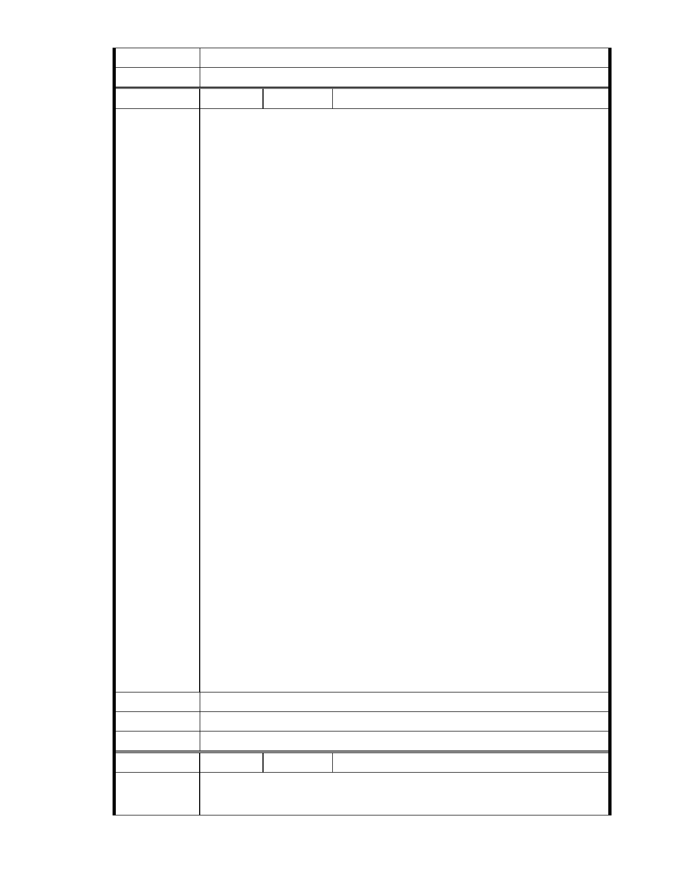

市府說明
委員會決議
編號
相關陳情意見將納入本案審查人民意見，依法定程序辦理。
同編號 1。
261 陳情人 葉美玉
主席、各位委員、各位媒體朋友：大家好！
我叫葉美玉，是內湖居民，也是慈濟 25 年的志工，從美國開始做慈濟，
孩子讀大學後，我們夫妻就搬到加拿大，當初加拿大分會創立時，師父
只給我們八個字：「自立更生，就地取材」，也就是用的是台灣慈濟的
名義，卻從來未用過台灣一塊錢的捐款，但是一旦台灣有災難，譬如 921
地震、88 風災… 我們都發動募款回台灣。
其實，我們在加拿大所做的，遠不及師父 47 年來為台灣所做的萬分之
一，卻獲得加拿大政府很大的肯定。每年 5 月第 2 個星期日是溫哥華慈
濟日，師父和慈濟的事跡也編入高中課本。我是一位平凡的女人，因為
做慈濟而得過加拿大優秀婦女獎、溫哥華兩家大醫院基金會的董事、亦
是 BC 省急難隊長… 25 年來我在全世界各國做慈濟，新加坡、香港是寸
土寸金的國家，都撥地給慈濟做環保，向委員們報告：全世界做慈濟最
困難的地方就是台灣。
陳 情 理 由 七年前我們全家搬回台灣定居，我們選擇了內湖，公司也買在內湖科學
園區，我這麼瞭解慈濟，如果內湖園區會破壞內湖，我又怎麼會搬到內
湖呢？
近年來，每年有近 300 個海內外團體來內湖區參訪，環保志工推廣環保
都能侃侃而談，慈濟有很好的軟實力，環保硬體卻如此不堪，往往讓海
外參訪者很不解。
我們很感恩委員們數次到園區來查證和瞭解，明明這塊土地沒有礦坑、
沒有斷層、不是溼地，淹水也與慈濟無關，卻任人在巴士上張貼師父相
片，極盡污衊和毀謗。師父還教我們「與人無爭、與事無爭」，可是我
們替師父覺得委曲，我們很心疼。慈濟不需要任何掌聲，但是我們需要
政府和委員們的支持和信任，相信慈濟會使內湖更好，請拿出正義來批
准我們的改善案。感恩！
建議辦法
市 府 說 明 相關陳情意見將納入本案審查人民意見，依法定程序辦理。
委 員 會 決 議 同編號 1。
編 號 262 陳情人 黃朝陽
有關慈濟內湖園區改善案個人看法
陳情理由
各位委員媒體界朋友及關心此事之鄉親們大家好
- 304 -